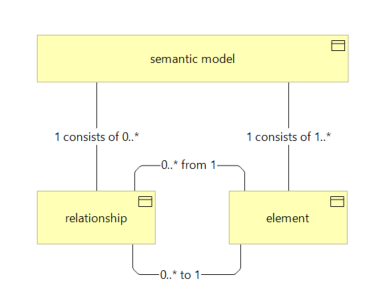

Wat een mens stilzwijgend weet, moet voor een LLM op papier staan
Over semantic models, ontologieën, knowledge graphs en de vraag hoe ze in Entoli worden ingevuld. Een discussiestuk voor data-architecten.
Inleiding
Begrippen die niemand vastlegt
Drie afdelingen gebruiken het woord "aanvrager". De ene bedoelt de persoon die iets aanvraagt, de tweede het dossier, de derde de organisatie die namens iemand aanvraagt. Een mens lost dat op in de wandelgang. Een taalmodel (large language model, LLM) kent alleen de tekst die het krijgt voorgelegd en wat het uit zijn training heeft overgehouden. Wie het de verkeerde context geeft, krijgt een antwoord dat klopt voor de verkeerde betekenis.
Dat probleem wordt groter nu AI ook software bouwt. Een agent die op basis van een opdracht een ontwerp, code of een datamodel maakt, werkt met de begrippen die hij aantreft. Ontbreekt de definitie van "aanvrager", dan kiest hij zelf een betekenis. Die keuze staat daarna in het systeem, zonder dat iemand haar heeft gemaakt of gecontroleerd.
De vraag van dit discussiestuk
Dat roept de vraag op waar dit discussiestuk om draait:
Waarom zijn semantiek en ontologie belangrijker geworden nu AI wordt ingezet om software te realiseren? En hoe houd je het vastleggen van betekenis beheersbaar?
Het voorlopige antwoord is een hypothese. Een mens vult onduidelijke begrippen aan met overleg en ervaring, een taalmodel met wat statistisch aannemelijk is. Daardoor kan een ontbrekende definitie een bron worden van fouten die niemand opmerkt. Expliciete begrippen en relaties maken het mogelijk om een model gericht te voeden en zijn uitkomst na te lopen. Of de uitkomst daardoor ook beter wordt, is een verwachting en geen vastgesteld resultaat.
Die verwachting is nog nauwelijks getoetst. Hoe groot de gevolgen van onvolledige semantiek zijn, is maar beperkt onderzocht, en in de geraadpleegde bronnen is geen onderzoek aangetroffen dat ze meet voor het realiseren van software.
Daar staat tegenover dat het vastleggen en onderhouden van begrippen en relaties tijd en geld kost. Een opbrengst die nog niet is gemeten, staat dus tegenover kosten die zeker zijn. Die afweging maakt de vraag relevant. Dit discussiestuk is een voorzichtige aanzet om haar te beantwoorden.
Wat is Entoli?
Entoli is een kennisgedreven ontwikkelsysteem waarmee AI-agents op basis van expliciete semantische modellen en normatieve regels systematisch kunnen worden ontworpen, geconfigureerd en ingezet.
De naam komt van het Griekse εντολή (entolí): opdracht, en in computertaal een commando. Die naam drukt het uitgangspunt uit: een agent handelt op wat is vastgelegd, niet op wat hij zelf aannemelijk vindt.
De kern bestaat uit twee dingen. Per kennisdomein, zoals datamodellering of enterprise-architectuur, legt een Canon de betekenis vast in een Semantic Model: de begrippen van dat domein en hun relaties. Daarnaast definieert de canon normatieve regels die begrenzen wat geldige interpretatie en geldig gebruik van die betekenis is. Boven alle canons staat een constitution met de bindende uitgangspunten voor het hele ecosysteem. Als doel noemt die voorspelbaarheid, kwaliteit, veiligheid en herleidbaarheid. Agents zijn de uitvoerders: voor elke agent ligt vast wat hij mag en wat hij oplevert.
Entoli zit in de testfase. Wat in dit discussiestuk over Entoli staat, is een momentopname. Op de vraag van dit discussiestuk bevatten de Entoli-bronnen wel al een uitgesproken antwoord. Hoofdstuk 5 en 6 beschrijven hoe Entoli de vraag invult; hoofdstuk 7 trekt de slotsom.
Lezers en bronnen
Het discussiestuk is geschreven voor data-architecten die DAMA kennen en geen AI-achtergrond hoeven te hebben. Het heeft daarom een tweede doel: de AI-begrippen die het gebruikt zo eenvoudig mogelijk uitleggen. Zonder kennis van die begrippen, is het betoog niet te volgen. Wat uit een bron komt, staat met verwijzing in de tekst. Interpretaties van de auteur zijn als zodanig benoemd. De Entoli-bronnen zijn in het Engels geschreven. Definities daaruit staan in dit discussiestuk in een eigen Nederlandse vertaling; andere citaten staan in de taal van de bron.
Dit discussiestuk betoogt dat een semantisch model waarde kan hebben voor wie met LLM's werkt. Iets vergelijkbaars geldt voor de lezer: ook een menselijke lezer vult een onbekend of vaag begrip aan met wat aannemelijk klinkt. Bijlage D geeft daarom wat dit discussiestuk voor een LLM aanbeveelt: de belangrijkste begrippen en hun relaties, in een tabel en in een graaf. Wie tijdens het lezen twijfelt wat een begrip betekent, kan het daar nazoeken. Wie het discussiestuk met een LLM bespreekt of laat samenvatten, kan de bijlage als context meegeven.
Het voorbeeld in dit discussiestuk
De begrippen en keuzes worden in dit discussiestuk concreet gemaakt met één fictief, vereenvoudigd voorbeeld: een gemeente die aanvragen van inwoners verwerkt. Het voorbeeld is speciaal voor dit discussiestuk opgesteld. Het beschrijft geen bestaande Entoli-casus en komt niet uit een canonieke Entoli-bron.
Inhoudsopgave
- 7. Slotsom
- 8. Vragen voor de discussie
- Bronnen
- Bijlage A. Entoli-bronnen
- Bijlage B. De relatietypen
- Bijlage C. Fragment uit de Entoli Semantic Graph
- Bijlage D. De begrippen van dit discussiestuk
1. Wat een LLM is en waarom semantiek ertoe doet
1.1 Hoe een taalmodel werkt
1.1.1 Wat is een taalmodel?
Wie op een telefoon een bericht typt, kent de automatische aanvulling. Na "Ik ben onderweg en kom" stelt het toetsenbord "zo" of "later" voor, op basis van wat er al staat en van wat in de praktijk vaak volgt.
Een taalmodel doet in de kern hetzelfde: het berekent bij een stuk tekst welke tekst er waarschijnlijk op volgt. Het verschil zit in de schaal. Een groot taalmodel is getraind op enorme hoeveelheden tekst en kijkt niet naar de laatste twee woorden, maar naar alles wat er tot dan toe staat. Na "De hoofdstad van Frankrijk is" ligt "Parijs" voor de hand. Na "De inwoner dient een" is dat eerder "aanvraag".
Moderne modellen doen veel meer dan zinnen afmaken. Ze beantwoorden vragen, vatten documenten samen, vertalen en schrijven code. Dat lijkt een andere soort werk, maar het mechanisme is hetzelfde: een vraag is het begin van een tekst en het antwoord is de voortzetting. Na de eerste training worden de meeste modellen nog bijgestuurd om instructies te volgen en bruikbare antwoorden te geven, maar ook dan zetten ze tekst voort.
Daaruit volgt iets wat voor de rest van dit discussiestuk zwaar weegt. Het model zoekt een aannemelijk vervolg, geen gecontroleerd juist vervolg. Meestal vallen die twee samen. Niet altijd.
1.1.2 Wat is een token?
Een taalmodel werkt niet met letters of hele woorden, maar met tokens: tekstfragmenten uit een vaste lijst die het model kent. Een token kan een heel woord zijn, een woorddeel, een leesteken, een spatie met een woord erachter of een los cijfer.
Neem de zin "Aanvragen worden beoordeeld." Een model kan die opdelen als
Aan · vragen · worden · beoordeeld · .
Dit is een illustratie. Hoe een zin precies wordt opgedeeld, verschilt per model. Een token is dus niet altijd een woord. Korte, veelvoorkomende woorden zijn vaak één token, lange of zeldzame woorden, zoals Nederlandse samenstellingen, vallen meestal uiteen in meerdere stukken. Nederlandse tekst telt daardoor doorgaans meer tokens dan woorden.
Dat doet ertoe, omdat tokens de eenheid zijn waarin een model leest, schrijft, rekent en wordt gefactureerd. Ook de grens van wat het in één keer kan verwerken, wordt in tokens uitgedrukt (zie 1.1.4).
1.1.3 Neuraal netwerk en modelgewichten
Een neuraal netwerk is een rekenstructuur van heel veel eenvoudige eenheden in lagen. Elke eenheid ontvangt getallen, rekent er iets mee en geeft de uitkomst door aan de volgende laag. Aan elke verbinding hangt een getal dat bepaalt hoe sterk het ene signaal het andere beïnvloedt. Zo'n getal heet een gewicht, of modelgewicht.
Figuur 1. Links: gewichten tussen rekeneenheden, zonder benoemde betekenis. Rechts: benoemde relaties tussen domeinbegrippen.
Een groot taalmodel heeft er miljarden. Samen bepalen ze wat het model met een tekst doet. Een data-architect doet er goed aan vooral te zien wat dit niet is. Het is geen database: er zijn geen tabellen, records of sleutels, en er valt niets op te zoeken of te wijzigen zoals een rij. De eenheden zijn evenmin domeinbegrippen. Er is geen eenheid "vergunning" en geen eenheid "aanvrager". Wat het model weet, zit verspreid over de getallen, en er is geen plek waar een bepaald feit staat.
De rechterkant van de figuur laat iets anders zien. In een semantisch model zijn begrippen en hun relaties benoemd en vastgelegd: een Aanvrager dient een Aanvraag in, en een Aanvraag betreft een Vergunning. Aan zo'n relatie hangt geen gewicht. Ze is aan te wijzen en te controleren. Dat betekent niet dat het taalmodel stopt met rekenen. Een semantisch model is een apart document dat aan het taalmodel wordt meegegeven. Het taalmodel verwerkt die tekst zoals elke andere tekst, met zijn gewichten, en zoekt nog steeds een aannemelijk vervolg. Wat de vastgelegde betekenis wel doet, is dit (zie 1.2.4):
Een semantisch model kan de kans vergroten dat een taalmodel de bedoelde betekenis gebruikt. Het maakt bovendien te controleren of de uitkomst aansluit bij de vastgelegde begrippen.
Het eerste is een verwachting die in de geraadpleegde bronnen niet is gemeten. Het tweede is controleerbaarheid: je kunt nagaan op welke vastgelegde begrippen een uitkomst steunt. Dat is iets anders dan de zekerheid dat de uitkomst juist is.
1.1.4 Training, transformer en contextvenster
Een model wordt getraind door het enorme hoeveelheden tekst voor te leggen. Het voorspelt telkens het volgende token, vergelijkt dat met het token dat er werkelijk volgt en past de gewichten een heel klein beetje aan. Dat gebeurt ontelbare keren. Wat overblijft is een stel gewichten waarin patronen over taal en over de wereld zijn vastgelegd. Daarna staan ze vast: het model leert niet bij tijdens gebruik.
Vrijwel alle huidige taalmodellen gebruiken de transformer-architectuur (Vaswani e.a., 2017). Haar kernidee heet attention. Bij elk volgend token weegt het model hoe relevant elk eerder token in de tekst is. Neem de zinnen "De klant diende in maart een aanvraag in. Na twee weken werd ze afgewezen." Grammaticaal kan "ze" zowel naar de klant als naar de aanvraag verwijzen. Attention laat het model "afgewezen" in verband brengen met "aanvraag", dus het kiest de aanvraag. Hetzelfde mechanisme verklaart waarom meegegeven tekst ertoe doet. Staat een definitie van Aanvraag in de tekst die het model verwerkt, dan kan die meewegen bij elk token dat volgt. Een garantie dat het model haar volgt, is dat niet.
Per aanroep kan een model maar een beperkt aantal tokens verwerken: de instructie, de meegegeven documenten en zijn eigen antwoord samen. Dat is het contextvenster. Tussen twee aanroepen onthoudt het model niets, behalve wat in de gewichten zit. Wat niet in het venster staat en ook niet in de training zat, bestaat voor het model niet.
1.2 Wat dit betekent voor betekenis
1.2.1 Kennis zit impliciet in het model
Een LLM slaat kennis impliciet op. Er is geen tabel met entiteiten en relaties die je kunt inspecteren, en het is dus onjuist om een LLM te beschrijven als een verzameling nodes en edges. Wiskundig kun je elk netwerk als graaf tekenen, maar die nodes zijn geen domeinbegrippen zoals "vergunning" of "aanvrager". Wie wil weten of het model onder "aanvrager" hetzelfde verstaat als zijn organisatie, kan dat niet nakijken. Hij kan het alleen uitproberen.
1.2.2 Hallucinatie
Een taalmodel zoekt een aannemelijk vervolg, geen gecontroleerd juist vervolg (zie 1.1.1). Meestal vallen die twee samen. Lopen ze uiteen, dan schrijft het model een vloeiende, zelfverzekerde zin die niet klopt. Dat heet hallucinatie. Een verzonnen voorbeeld van zo'n antwoord:
De toren van Pisa is scheef, zo heeft de architect het bedacht.
De zin klinkt aannemelijk: een opvallend gebouw, een architect met een bijzonder idee. Hij is onjuist. De toren is tijdens de bouw gaan hellen, doordat de slappe ondergrond aan één kant inklonk. Niets in de zin verraadt de fout. Dat maakt hallucinatie lastig: een onjuist antwoord ziet er net zo uit als een juist antwoord.
Het verschijnsel is goed gedocumenteerd (Ji e.a., 2023). Kalai e.a. (2025) zoeken de oorzaak in de manier waarop modellen worden getraind en beoordeeld: een gok levert gemiddeld meer op dan "ik weet het niet". Een model vult een gat dus liever met iets aannemelijks dan dat het het gat laat zien.
Voor dit discussiestuk is dat de kern. Ontbreekt de definitie van "aanvrager", dan kan het model er zelf een kiezen, en die keuze ziet er even overtuigend uit als een juiste. Beide studies gaan vooral over feitelijke vragen en samenvattingen. Dat het bij onvolledig gedefinieerde domeinbegrippen net zo werkt, is een interpretatie van de auteur van dit discussiestuk.
1.2.3 Herkomst en contextvenster
Een LLM schrijft vloeiende tekst die ook onjuist kan zijn, en kan niet betrouwbaar aanwijzen uit welke bron een bewering komt. In de Entoli-begrippenlijst voor LLM's is daarom onderscheid gemaakt: een trainingsbron is na de training niet meer individueel herleidbaar, een runtime-bron wordt tijdens de aanroep aangeboden (zie voor de termen trainingsbron en runtime-bron Bijlage D).
Omdat het contextvenster eindig is, moet bovendien iemand kiezen welke kennis het model meekrijgt. Dat is een architectuurkeuze, en om te kunnen kiezen heb je iets nodig om op te selecteren.
1.2.4 Expliciete relaties en hun prijs
Als betekenis is vastgelegd in begrippen en relaties, kun je op die structuur selecteren: geef alle begrippen die met Aanvraag samenhangen. Je kunt ook nagaan of een antwoord terug te voeren is op een vastgelegd begrip. Dat is geen eigenschap van het model, maar van de omgeving die je eromheen bouwt.
GraphRAG (Edge e.a., 2024) is een voorbeeld van zo'n omgeving, maar van een andere soort dan een beheerd semantisch model. Gewone retrieval-augmented generation (RAG) zoekt bij een vraag eerst passende tekstfragmenten op en geeft die als context aan het model mee. GraphRAG laat een LLM uit de brondocumenten eerst een graaf van entiteiten en hun relaties afleiden, en vooraf samenvattingen maken van groepen nauw verwante entiteiten. Een vraag over de hele documentverzameling, zoals "wat zijn de belangrijkste thema's?", wordt beantwoord door per samenvatting een deelantwoord te maken en die deelantwoorden daarna samen te vatten. De auteurs rapporteren voor zulke vragen vollediger en gevarieerder antwoorden dan met gewone RAG.
Die evaluatie heeft grenzen. Ze omvat twee documentverzamelingen van elk ongeveer een miljoen tokens, podcasttranscripten en nieuwsartikelen. De vragen zijn door een LLM gegenereerd, en een LLM vergelijkt de antwoorden paarsgewijs. De auteurs noemen zelf toetsing in andere domeinen nodig. De resultaten gelden dus voor brede vragen over documentverzamelingen, en zeggen niets over de werking of de meerwaarde van een beheerd semantisch model zoals dat van Entoli.
Belangrijker voor dit discussiestuk is het verschil in aard. De graaf van GraphRAG is een index die een LLM automatisch uit teksten afleidt, om vragen over die teksten te beantwoorden. Het artikel beschrijft geen eigenaarschap van begrippen, geen gezaghebbende definities en geen normatieve regels. Een beheerd semantisch model legt juist die dingen vast. GraphRAG is daarom een contrastgeval, en hoogstens een mogelijke aanvulling op beheerde semantiek (zie hoofdstuk 8).
Er is ook een serieus tegenargument. Een expliciete graaf kost beheer, en veel toepassingen redden zich prima met goede documenten en eenvoudige zoekmethoden. Het mogelijke voordeel hangt af van de taak: naar verwachting groter bij controle, hergebruik en samenhang over veel documenten, kleiner bij een eenmalige vraag over één document.
2. Was dit niet altijd al zo?
2.1 Een bekend inzicht
Ja, en dat is het ongemakkelijke deel. Eric Evans noemde in Domain-Driven Design (2003) het opbouwen van een gedeelde, nauwkeurige taal tussen ontwikkelaars en domeinexperts een kernpraktijk: de Ubiquitous Language. Martin Fowler vat samen dat die taal gebaseerd moet zijn op het domeinmodel van de software. Domeinexperts moeten bezwaar maken tegen termen die onhandig of ontoereikend zijn, en taal en model veranderen mee met het groeiende begrip (Fowler (2006), Ubiquitous Language).
Data-architecten kennen het dagelijkse equivalent: de business glossary, metadatamanagement, datamodellering. DAMA-DMBOK2 behandelt Data Modeling and Design en Metadata Management als aparte kennisgebieden (DAMA International, 2017).
2.2 Waarom het vaak niet gebeurt
Toch gebeurt het vaak niet, of half. Twee verklaringen liggen voor de hand, al is geen van beide universeel. Begrippen definiëren, afbakenen en onderhouden vraagt overleg en discipline, en dat is arbeidsintensief. Bovendien is documentatie onder druk op de planning een van de eerste dingen die sneuvelt, ook als vastgelegde taal later tijd zou besparen. Beide verklaringen berusten op de praktijkervaring van de auteur van dit discussiestuk, niet op gemeten gegevens. Onderzoek dat ze meet, is in de geraadpleegde bronnen niet aangetroffen.
Wat AI verandert, is niet het belang van betekenis, maar wie de gevolgen draagt van onvolledige afspraken. Een collega vult de gaten stilzwijgend aan. Een LLM vult ze ook aan, met iets plausibels dat niemand heeft gecontroleerd, en kan daarbij hallucineren (zie 1.2.2).
2.3 Van gedeelde term naar model
Een gemeente verwerkt aanvragen van inwoners. Het woord "aanvrager" wordt zo gebruikt:
| Team | Bedoelt met "aanvrager" |
|---|---|
| Klantcontact | de persoon die belt |
| Behandeling | het dossier dat is aangemaakt |
| Juridische zaken | de rechtspersoon die formeel de aanvraag indient |
Het oplossen gaat in drie stappen.
- Term en definitie. Het team kiest één term per begrip: Inwoner, Aanvraag en Machtiging (het recht om namens een ander een aanvraag te doen). Elk begrip krijgt een korte definitie.
- Relaties. "Een Inwoner dient een Aanvraag in." "Een Aanvraag leidt tot een Besluit." "Een Aanvraag namens een ander steunt op een Machtiging." Nu staat vast hoe de begrippen samenhangen, en niet alleen wat ze betekenen.
- Toepassing. Een mens of een LLM kan vragen: "welke Besluiten horen bij deze Inwoner?", zonder dat het antwoord afhangt van wat "aanvrager" betekent.
flowchart LR I["Inwoner"] -- "dient in" --> A["Aanvraag"] A -- "leidt tot" --> B["Besluit"] A -- "steunt op" --> M["Machtiging"]
Figuur 2. Eigen visualisatie van de begrippen en relaties uit het voorbeeld, zonder concrete gegevens.
In het diagram is te zien waar de verwarring ontstond. "Aanvrager" kan wijzen naar de Inwoner, naar de Aanvraag en, via de Machtiging, naar iemand anders dan de Inwoner. Zodra elk van die begrippen een eigen naam en een eigen plek heeft, ligt vast welke bedoeld is. Of een lezer of een taalmodel die keuze ook volgt, is een tweede vraag.
3. ArchiMate als bron van inspiratie
ArchiMate is de modelleertaal van The Open Group voor enterprise-architectuur. Entoli is door ArchiMate geïnspireerd, vooral door de manier waarop ArchiMate relaties als eigen begrippen met een vastgelegde betekenis behandelt. Het Entoli-metamodel neemt ArchiMate niet over en wijkt er op een paar punten van af.
3.1 De top-level language structure
3.1.1 Wat laat het model zien?

Figuur 3. De top-level language structure van ArchiMate. Bron: The Open Group, ArchiMate Specification 3.2, §3.2. © The Open Group.
Een Model bestaat uit Concepten. Een Concept is een Element, een Relationship of een Relationship Connector. Een Element is een Behavior Element, een Structure Element, een Motivation Element of een Composite Element.
Voor dit discussiestuk telt vooral de middelste specialisatie. In ArchiMate is een Relationship geen lijn tussen twee elementen, maar een Concept naast het Element. Een relatie heeft daardoor een eigen type en een eigen betekenis. Een Serving-relatie zegt iets anders dan een Realization- of een Assignment-relatie, en de specificatie legt per type vast tussen welke elementen het is toegestaan. Voor een ArchiMate-gecertificeerde lezer is dat bekend terrein. Wat het betekent voor het werken met een taalmodel, is minder vanzelfsprekend.
Leg het naast de werking van een taalmodel (zie 1.1.3). Ook een neuraal netwerk bestaat uit eenheden en verbindingen. Daar is een verbinding alleen een getal: een gewicht zonder naam, zonder type en zonder betekenis die je kunt aanwijzen. In ArchiMate is de verbinding zelf een benoemd begrip met een vastgelegde betekenis. Hoe begrippen samenhangen, staat in een taalmodel nergens als zodanig vastgelegd. In een model waarin relaties concepten zijn, staat het er wel, en je kunt het als tekst aan het taalmodel meegeven. Paragraaf 3.1.2 laat zien hoe het Entoli-metamodel dit uitgangspunt overneemt.
Net als ArchiMate beperkt het Entoli-relatieregister relaties tot een vaste set typen met vastgelegde gebruiksregels. Zo bepaalt het model, en niet het taalmodel, wat voor soort verbinding twee begrippen hebben.
3.1.2 Relaties als concepten in het Entoli-metamodel
- Het Entoli-metamodel heeft een vergelijkbare indeling, maar met twee uitkomsten in plaats van drie: Concept is de verzamelterm voor "een Element of een Relationship". Een Relationship Connector kent Entoli niet.
Wat ArchiMate en Entoli delen, is het best te zien aan de relatie. Het Entoli-metamodel volgt die lijn in zoverre dat een relatie geen lijntje is, maar een eigen, expliciet vastgelegde constructie. In het register is ze omschreven als een gerichte, semantische verbinding tussen twee elementen, met precies één bronelement, precies één doelelement en precies één type uit een vaste lijst, op dit moment zeven (zie Bijlage B). Daarbij is ze onderscheiden van het element: het element is de eenheid van betekenis, de relatie legt de betekenis van de graaf vast. Regel REL-001 is daarin vergaand: alle betekenis moet via relaties worden uitgedrukt. "Concept" is in Entoli overigens alleen een verzamelterm in de documentatie voor "element of relatie", geen gemodelleerd supertype. Figuur 4 toont de relatie in het conceptuele model van Entoli. Een semantic model bestaat uit elementen en uit relationships, en elke relationship heeft een element als bron en een element als doel.

Figuur 4. Uitsnede uit het conceptuele datamodel van Entoli (Entoli Conceptual Model, getekend in ArchiMate-notatie): een semantic model bestaat uit elementen en relationships, en een relationship verwijst naar een element als bron en een element als doel.
Een relatie verbindt dus een bron met een doel en heeft zelf betekenis. Neem de relatie Aanvraag — wordt-beoordeeld-door → Medewerker. In een database is dit meestal een kolom met een sleutel naar de medewerker. De kolom legt een verwijzing vast, maar de betekenis zit alleen in de naam die iemand eraan gaf. Is de relatie zelf een vastgelegde constructie, dan heeft wordt beoordeeld door een naam, een richting en een type, en kun je er iets over vastleggen: alleen een Medewerker mag beoordelen, een Aanvraag heeft precies één beoordelaar. In Entoli zou zo'n label worden gekoppeld aan een canoniek type. Omdat geen van de zes specifieke types past, zou dat relates-to zijn, dat volgens het relatieregister (REL-026) alleen als laatste redmiddel is toegestaan. De betekenis staat dan expliciet in het model, en niet impliciet in een attribuut, een sleutel of een informele verbinding. Regels in het relatieregister gelden voor relatietypen, bijvoorbeeld welk type tussen welke soorten elementen is toegestaan (zie 5.3). In de geraadpleegde bronnen is niet aangetroffen dat ook herkomst aan een afzonderlijke relatie hangt; dat is een mogelijkheid van deze manier van modelleren.
Wat hierna volgt is architecturale duiding van de auteur. In de geraadpleegde canonieke Entoli-bronnen is geen besluit aangetroffen dat deze keuze expliciet op deze gronden motiveert. Voor AI levert het één mogelijk voordeel op. Omdat begrippen en relaties expliciet in het model staan, kun je de begrippen en relaties die bij een opdracht horen gericht als context aan een LLM meegeven, bijvoorbeeld Aanvraag met alles wat daaraan hangt, in plaats van het hele register. Het kan ook helpen om na te gaan op welke begrippen en relaties een antwoord is gebaseerd, voor zover die zijn meegegeven. Dat zijn mogelijkheden van de architectuur. Of ze tot betere antwoorden leiden, is een open vraag: in de geraadpleegde bronnen staat daarvoor geen onderbouwing.
Een nuancering is hier nodig. Dat een semantisch model een graafstructuur heeft, betekent niet dat een LLM zo werkt, en ook niet dat een LLM werkt als ArchiMate. Een LLM rekent met gewichten (zie 1.1.3) en bevat geen domeingraaf met expliciete concepten en relaties. Een semantisch domeinmodel en het rekenmodel van een neuraal netwerk zijn verschillende dingen. De overeenkomst zit hooguit in het bruikbare idee van expliciete relaties: in Entoli staat zo'n model naast het taalmodel en wordt het als context meegegeven.
3.2 Soorten elementen: ArchiMate en Entoli
3.2.1 De vijf Entoli-classificaties
ArchiMate deelt elementen in naar wát ze zijn in een organisatie: gedrag, structuur, motivatie of een samenstelling daarvan. De Entoli-eigen indeling volgt de rol die elementen spelen in het semantische apparaat zelf. Ze staat in het begrippenregister van het Semantic Metamodel:
| Entoli-classificatie | Definitie in het register (verkort) | Voorbeeld uit het register | Voorbeeld uit data-architectuur | Toelichting op de indeling |
|---|---|---|---|---|
| Domain Element | draagt de inhoud van een Knowledge Domain: een entiteit, handeling of werkproduct van dat domein; het enige type dat andere elementen mag gebruiken | Agent, Agent Package; Logical Data Model, Entity (Data Modelling); Data Governance, Data Steward (illustratief) | Een datakwaliteitsreview als handeling | Een entiteit, handeling of werkproduct van een domein. De voorbeelden zijn illustratief |
| Classification Element | definieert een ordeningsas; heeft geen operationele functie | Source Regime; Attribute Classification, Data Type (Data Modelling) | Een schema voor de gevoeligheid of vertrouwelijkheid van gegevens | Een as waarlangs gegevens worden ingedeeld, zonder zelf gegevens te zijn. Zelf bedacht voorbeeld, geen onderdeel van een Entoli-register |
| Position Element | één positie op zo'n as; is altijd onderdeel van precies één Classification Element | Canon-bound; Semantic, Temporal, Process, System (Attribute Classification) | Public, Internal, Confidential (illustratief) | Alleen zinvol als waarden op de as. Naam en aantal niveaus verschillen per organisatie en zijn hier niet aan DAMA-DMBOK2 toegeschreven |
| Para Element | beschrijft gegevens over uitvoering, status, overdracht en controleerbaarheid van handelingen binnen een domein; observerend, beschrijft het proces en niet het inhoudelijke resultaat | Paradata; bij het uitvoeren van een prompt: het aantal gebruikte tokens voor invoer en uitvoer, de responsetijd van het LLM en het tijdstip waarop de prompt is uitgevoerd (illustratief) | Goedkeuringsstatus en tijdstip van een classificatiebesluit; de overdracht van een dataset aan een andere verantwoordelijke | Procesgegevens over de handeling. De klantgegevens zelf, het besluit "Confidential" en het antwoord van het LLM zijn inhoud en geen Para Element |
| Meta Concept | beschrijft de constructies waarmee Entoli betekenis vastlegt en interpreteert; domeinonafhankelijk | Concept, Term, Definition | Term en definitie in een business glossary (vergelijking) | Metamodelbegrippen van een externe standaard, zoals het Business Object van ArchiMate, zijn voor Entoli domeininhoud |
Het zijn er vijf, maar ze staan niet op één niveau. Meta Concept markeert het metamodel-niveau: een element is een Meta Concept dan en slechts dan als het Semantic Metamodel het bezit. De andere vier zijn soorten element binnen het domein van een canon. In het register heet Meta Concept een "fifth, sibling" classificatie naast de andere vier. In het uitgangsdocument staan alleen de eerste vier.
De voorbeelden uit data-architectuur zijn illustratief. DAMA-DMBOK en ArchiMate helpen om ze te herkennen, maar bepalen niet hoe ze in Entoli worden geclassificeerd. Die classificatie volgt uit de Entoli-definities en de canon.
4. De vakliteratuur: drie begrippen, drie accenten
De termen semantic model, ontologie en knowledge graph worden in twee stappen afgebakend. Dit hoofdstuk laat zien hoe enkele bronnen uit de vakliteratuur de drie termen gebruiken (4.1), waarom Entoli voor semantic model kiest (4.2) en hoe het gemeentevoorbeeld eruitziet als knowledge graph (4.3). Hoofdstuk 5 beschrijft daarna hoe de termen in de Entoli-bronnen zijn ingevuld: welke een canoniek Entoli-begrip is en welke niet, met de kenmerken waarop het oordeel over ontologie berust (5.1), en in welke twee vormen het Semantic Model voorkomt (5.2).
4.1 Semantic model, ontologie en knowledge graph
De drie begrippen komen uit verschillende tradities en worden in de praktijk door elkaar gebruikt. De matrix toont per begrip enkele bronnen en wat ze met de term bedoelen. Het is een beperkte selectie en geen systematische literatuurreview.
| Begrip | Bron en jaar | Discipline of context | Betekenis of accent in deze bron |
|---|---|---|---|
| Semantic model (semantic data model) | Hull & King (1987) | Databases, datamodellering | Semantische modellering biedt rijkere structureringsmogelijkheden dan een eenvoudig recordgebaseerd model ("richer data structuring capabilities"): expliciete objecten, attributen en relaties, complexe typen, ISA-relaties en afgeleide schemacomponenten |
| Semantic model | Microsoft (z.d.), productdocumentatie | BI-tooling (Power BI) | Een gegevensbron die klaar is voor rapportage en visualisatie, technisch een datamodel op basis van Analysis Services. In de documentatie worden "semantic model" en "model" vrijwel als synoniemen gebruikt |
| Ontologie | Gruber (1993) | Gene Ontology (biologie), SNOMED CT (zorg) | Een specificatie van een representatievocabulaire voor een gedeeld domein; "An ontology is an explicit specification of a conceptualization" |
| Ontologie | Studer, Benjamins & Fensel (1998) | Knowledge engineering | Ligt in het verlengde van Gruber en benadrukt drie kenmerken: formeel (machineleesbaar), expliciet en gedeeld (een conceptualisering waarover consensus bestaat) |
| Knowledge graph | Fensel e.a. (2020) | Wikidata, DBpedia. Op kleine schaal: Figuur 5 als geheel, het schema plus de gegevens Mevrouw Jansen, Aanvraag A-123 en Besluit D-77 | Het boek opent met de vraag wat een knowledge graph is. Het stelt dat de term geen vaststaande definitie heeft en leidt een werkdefinitie af uit definities in de literatuur |
| Knowledge graph | Hogan e.a. (2021) | Gegevensbeheer en AI; overzichtsartikel | Een inclusieve definitie: een graaf van gegevens, bedoeld om kennis over de werkelijkheid te verzamelen en over te brengen, met entiteiten als nodes en relaties als edges. De auteurs noemen de definitie omstreden |
Microsoft is productdocumentatie en geen wetenschappelijke literatuur; de pagina vermeldt geen publicatiejaar, vandaar "z.d." (geraadpleegd op 17 oktober 2026). De weergave van Studer e.a. en Fensel e.a. berust op secundaire beschrijvingen en niet op de volledige tekst. De overige bronnen zijn in de oorspronkelijke publicatie of pagina geraadpleegd.
Wie "semantic model" leest, moet dus eerst nagaan welke traditie bedoeld wordt. In de databaseliteratuur is een semantic data model een specifiek soort modelleerformalisme, en dat gebruik is niet zonder toelichting gelijk te stellen aan ieder ander gebruik van "semantic model", zoals dat in Power BI. Bij ontologie liggen de formuleringen van Gruber en Studer e.a. dicht bij elkaar. Volgens secundaire bronnen voegen Studer e.a. eerdere definities samen, waaronder die van Gruber, en leggen ze de nadruk op het formele en het gedeelde. Dat is een aanscherping en geen meningsverschil. De twee knowledge-graph-bronnen laten andere accenten zien: Fensel e.a. beschouwen de term als nog zonder vaststaande definitie en kiezen een werkdefinitie, Hogan e.a. kiezen een inclusieve definitie en erkennen dat die omstreden blijft. Geen van beide stelt één definitie als universeel vast.
De conclusie blijft daarom beperkt. De besproken bronnen gebruiken de termen vanuit verschillende contexten en met verschillende accenten. Dat zegt iets over deze selectie en niet over de literatuur als geheel.
De drie begrippen blijven wel te onderscheiden, al overlappen ze. Een semantic model legt de betekenis van een domein vast op schemaniveau, een ontologie voegt daar formaliteit en gedeeldheid aan toe en een knowledge graph richt zich op de gegevens zelf. Die onderscheiding is een lezing van de auteur; geen van de geraadpleegde bronnen deelt het zo in.
| Semantic model | Ontologie | Knowledge graph | |
|---|---|---|---|
| Niveau | schema | schema, vaak met logica | gegevens, soms ook schema |
| Vaste notatie | nee | vaak (bijvoorbeeld OWL) | vaak (bijvoorbeeld RDF) |
| Overlap | kan op een ontologie lijken | kan als schema van een graaf dienen | kan een semantic model of ontologie gebruiken |
| In Entoli | Semantic Model (canoniek begrip) | geen canoniek begrip | geen canoniek begrip; de Entoli-bronnen spreken van een semantic graph |
4.2 De Entoli-keuze voor de term semantic model
In Entoli staat semantic model voor een model waarin begrippen, definities en relaties expliciet worden vastgelegd, zodat hun betekenis voor mensen en systemen te begrijpen, te raadplegen en te controleren is. In het register is het formeler vastgelegd (vertaald): het Semantic Model is de volledige, gezaghebbende semantische structuur die door één Canon wordt gedefinieerd. Het bestaat uit de canonieke Elementen en de Relationships die hun onderlinge betekenis en structuur expliciet maken. De Canon is dus de definiërende partij, niet het Semantic Model. Volgens een kenmerk in hetzelfde register slaat "volledig" op de canonieke betekenis van die Canon, niet op de Canon als geheel. Dat de normatieve regels van de Canon er niet bij horen, staat in hetzelfde register onder "wat het niet is" (zie 5.1.1).
De term past bij wat in Entoli wordt gemodelleerd: betekenisvolle concepten en hun onderlinge relaties. Hij is bovendien niet beperkt tot rapportage of analyse. De productdocumentatie van Microsoft gebruikt semantic model voor een gegevensbron die klaar is voor rapportage. Dat is een andere laag dan het model van Entoli.
Het is een bewuste afbakening. De matrix laat zien dat de besproken bronnen de term met uiteenlopende accenten gebruiken, en dat zegt iets over deze selectie en niet over de literatuur als geheel. De Entoli-invulling is dus geen universele definitie en geen bestaande consensus, maar een Entoli-eigen keuze, expliciet vastgelegd in het register en consequent gebruikt.
Drie verwante termen liggen als alternatief voor de hand. Semantic data model heeft een sterke traditie in databasemodellering. De constructies die Hull en King beschrijven, namelijk expliciete objecten, relaties tussen objecten en ISA-relaties, komen terug in de Elementen, Relationships en is-a-relaties van Entoli. Het verschil zit in het onderwerp: bij Hull en King is dat het databaseschema, bij Entoli een canon-brede bron van betekenis.
Ontologie kan sterkere verwachtingen oproepen rond formalisering, machineleesbaarheid en een gedeelde conceptualisering. Gruber legt de nadruk op een gedeeld vocabulaire voor een domein, Studer e.a. volgens secundaire bronnen op een formele, expliciete en gedeelde specificatie. Niet elk gebruik van de term vereist al die kenmerken even sterk. Het gedeelde karakter is bij Entoli gezag door aanwijzing, omdat één Canon per domein de betekenis bezit, en geen consensus. Of het Entoli-model verder aan de kenmerken van een ontologie voldoet, volgt niet eenduidig uit de bronnen; 5.1.2 werkt dat uit. Ontology is in elk geval geen canoniek Entoli-begrip.
Een knowledge graph legt de nadruk op een graafrepresentatie van gegevens. Hogan e.a. hanteren een inclusieve definitie en noemen de definitie zelf omstreden. In de constitution is een graaf vastgelegd als afgeleide representatie van het gezaghebbende register. Die graaf heeft Elementen als nodes en Relationships als edges, wat aansluit bij de brede karakterisering van Hogan e.a., maar is niet zelf gezaghebbend. Een fragment uit een gecompileerde semantic graph staat in Bijlage C. De term semantic model benoemt het gezaghebbende model, de gecompileerde graaf is er een afgeleide representatie van.
Ook verwijst semantic model bij Entoli niet naar de gewichten of de interne werking van een neuraal netwerk (zie 1.1.3). Het is het expliciete, inspecteerbare model dat naast het taalmodel bestaat.
Voor agentische systemen kan zo'n model expliciete domeincontext bieden: begrippen, definities en relaties waarop gericht kan worden geselecteerd (zie 1.2.4). Dat werkt alleen wanneer een agent die context daadwerkelijk kan raadplegen en toepassen. Het model alleen garandeert geen correct gedrag. Bij Entoli is bovendien de samenstelling van wat een agent ontvangt nog niet als canoniek artefact vastgelegd.
De literatuur levert bruikbare perspectieven, maar bepaalt niet welke definities in Entoli gelden. Die werkdefinities moeten in de Entoli-registers expliciet worden vastgelegd en consequent worden gebruikt. In hoofdstuk 5 staat hoe ver dat nu is.
4.3 Dezelfde gemeente als knowledge graph
Het diagram heeft twee lagen. Boven staat het schema: wat voor soorten dingen er zijn en hoe ze samenhangen. Onder staan de gegevens over één concreet geval. De pijlen met "is een" verbinden de twee lagen.
flowchart TB
subgraph schema["Schema: wat voor soorten dingen bestaan er"]
T1["Inwoner"]
T2["Aanvraag"]
T3["Besluit"]
T1 -- "dient in" --> T2
T2 -- "leidt tot" --> T3
end
subgraph data["Gegevens: één concreet geval"]
I1(["Mevrouw Jansen"])
I2(["Aanvraag A-123"])
I3(["Besluit D-77"])
I1 -- "dient in" --> I2
I2 -- "leidt tot" --> I3
end
I1 -. "is een" .-> T1
I2 -. "is een" .-> T2
I3 -. "is een" .-> T3
Figuur 5. Eigen visualisatie van een kennisgraaf. Rechthoeken zijn begrippen in het schema, afgeronde vormen zijn instanties, onderbroken pijlen leggen het verband tussen beide.
Alternatieve tekst: twee gegroepeerde vlakken. Het bovenste vlak toont de begrippen Inwoner, Aanvraag en Besluit met de relaties "dient in" en "leidt tot". Het onderste vlak toont Mevrouw Jansen, Aanvraag A-123 en Besluit D-77 met dezelfde relaties. Drie onderbroken pijlen "is een" verbinden elke instantie met haar begrip.
Het bovenste vlak is wat een semantic model vastlegt. Voeg je er formele logica en een vaste notatie aan toe, dan schuif je op naar een ontologie. Het hele diagram, schema en gegevens samen, is een knowledge graph. Of dat verschil in de praktijk scherp genoeg is om te maken, komt terug in de discussievragen.
5. Deze begrippen in Entoli
In Entoli worden de woorden niet gebruikt zoals in de literatuur. Dat blijkt zodra je de drie begrippen apart bekijkt.
5.1 Drie begrippen, drie verschillende posities
5.1.1 Semantic Model
Semantic Model is een canoniek Entoli-begrip. Dit discussiestuk hanteert de volgende werkdefinitie. Het is een voorstel van dit discussiestuk op basis van de registers, geen letterlijke brondefinitie:
Het Semantic Model legt de canonieke betekenis vast die een Canon definieert: alle canonieke Elementen van die Canon en de Relationships die hun onderlinge betekenis en structuur expliciet maken. Voor die canonieke betekenis is het volledig en gezaghebbend. De normatieve regels van de Canon horen er niet bij.
De brondefinitie in het register van de Agent Development Canon luidt (vertaald): "Het Semantic Model is de volledige, gezaghebbende semantische structuur die door één Canon wordt gedefinieerd. Het bestaat uit de canonieke Elementen en de Relationships die hun onderlinge betekenis en structuur expliciet maken." Vier punten vragen toelichting:
- Richting. Werkdefinitie en register zijn het eens: de Canon definieert het Semantic Model, niet andersom. In het register is dat vastgelegd als de relatie Canon defines Semantic Model.
- Reikwijdte van "volledig". De definitie in het register zegt niet waarvoor het Semantic Model volledig is. Een kenmerk in hetzelfde register doet dat wel: het Semantic Model is volledig voor de canonieke betekenis van zijn Canon, en omvat niet de hele Canon. De werkdefinitie neemt die reikwijdte op in de definitie.
- Regels. Dat de normatieve regels buiten het Semantic Model vallen, staat niet in de definitie zelf, maar wel in de rubriek "wat het niet is" van hetzelfde register: het Semantic Model is geen Canon Rule en ook geen andere regel, omdat de Canon zijn regels apart van het Semantic Model definieert. Ook volgens het Semantic Metamodel begrenst een regel de betekenis, maar draagt hij haar niet zelf (zie 6.1). De werkdefinitie neemt die afbakening op in de definitie.
- Structuur en graaf. Het register noemt het Semantic Model een semantische structuur. Tot versie 2.11.0 stond daar "semantic graph"; die naam is nu voorbehouden aan de afgeleide representatie, de Semantic Graph (zie 5.1.3).
De structuur van het Semantic Model is een gerichte graaf, met Elementen als knopen en Relationships als verbindingen.
Elke Canon heeft precies één Semantic Model. Het geldt voor de hele canon en verandert niet tijdens de uitvoering. Het Semantic Metamodel is zelf ook een Canon: de canon waarvan de elementen de metaconcepten zijn.
Het woord graaf vraagt om een toelichting. In het Entoli Conceptual Model is vastgelegd dat de technische wijze waarop het Semantic Model wordt samengesteld, gecompileerd of opgeslagen, niet tot het begrip behoort. De gecompileerde graaf uit Bijlage C is dus niet het Semantic Model zelf, maar een afgeleide representatie ervan. In de Entoli-bronnen komt het woord graaf in beide betekenissen voor. Sinds versie 2.11.0 legt het register de verhouding vast: het Semantic Model is een semantische structuur, en de Semantic Graph is daarvan de afgeleide representatie. Dit discussiestuk volgt dat onderscheid: structuur voor het Semantic Model, afgeleide semantic graph voor de gecompileerde vorm.
De definitie van Canon in hetzelfde register luidt (in de bron in het Engels; vertaling van dit discussiestuk): "Een Canon is de gezaghebbende semantische basis voor een domein. Ze definieert de canonieke betekenis, het Semantic Model en de normatieve regels die nodig zijn voor een eenduidige interpretatie, herleidbaarheid en reproduceerbaar gebruik van die betekenis." Letterlijk gelezen noemt die zin drie dingen die een Canon definieert. Andere Entoli-bronnen noemen er twee. In het inleidende document van het Semantic Metamodel staat dat een Canon "domeinspecifieke Elements, Relationships en Rules" definieert, en in het register is sprake van "canonieke betekenis en normativiteit" (beide vertaald). Omdat het Semantic Model volgens het register uit de canonieke Elementen en Relationships bestaat, leest dit discussiestuk de canonieke betekenis en het Semantic Model als één en hetzelfde. Dat is een interpretatie van dit discussiestuk, geen letterlijke uitspraak van de bronnen. De definitie luidt daarmee:
Een Canon is voor een domein de gezaghebbende semantische basis. Ze definieert een Semantic Model, waarin de canonieke betekenis is vastgelegd, en normatieve regels die de geldige interpretatie en het gebruik van die betekenis begrenzen.
Het werkwoord definieert volgt het register: daar is de verhouding vastgelegd als Canon defines Semantic Model en Canon defines Canon Rule, en een defines-relatie drukt zeggenschap over betekenis uit, geen structuur (REL-022). De definitie zegt dus niet dat een Canon uit die twee bestaat, maar dat hij ze gezaghebbend vastlegt. In de huidige registerdefinitie staan de canonieke betekenis en het Semantic Model nog als twee aparte dingen; dit discussiestuk stelt voor de registerdefinitie hierop aan te passen.
Het Semantic Model is dus iets wat de canon definieert, niet de canon zelf. De normatieve regels maken gebruik van Elementen uit het model en begrenzen hoe die geldig worden geïnterpreteerd en gebruikt (zie 6.1).
Het woord canon sluit aan bij het gewone taalgebruik. In Merriam-Webster staan onder meer twee betekenissen die hier passen: "a sanctioned or accepted group or body of related works" en "a body of principles, rules, standards, or norms" (Merriam-Webster, z.d.). De eerste past bij de canon als gezaghebbende, erkende verzameling, de tweede bij de normatieve regels. Een algemeen aanvaarde vakdefinitie van canon voor kennismodellering is in de geraadpleegde bronnen niet aangetroffen. Dat een Entoli-canon precies één Semantic Model en een set normatieve regels definieert, volgt dus niet uit het woordenboek. Het is een Entoli-eigen ontwerpkeuze, vastgelegd in de kenmerken van Canon in het register.
5.1.2 Ontology
Ontology is geen gedefinieerd Entoli-begrip. Het register van het Semantic Metamodel bevat geen Element met die naam en in de constitution komt de term niet voor. Het woord komt alleen als gewone vakterm voor, in voorbeeldlijsten en naamgevingsvoorbeelden zoals ontology and concept registers of Ontology Diagram.
Of Entoli desondanks een ontologie heeft, beoordeelt dit discussiestuk aan de hand van de kenmerken uit 4.1: een ontologie is een expliciete specificatie van een conceptualisering (Gruber), en die specificatie is formeel, expliciet en gedeeld (Studer e.a.). Bij "formeel" lopen drie dingen gemakkelijk door elkaar:
- Machineleesbaarheid: een programma kan de specificatie inlezen en verwerken.
- Serialisatie: de vorm waarin de gegevens zijn vastgelegd, zoals JSON, XML of Turtle. Een serialisatie zegt nog niets over wat de gegevens betekenen.
- Formele semantiek: de betekenis van de constructies is zo vastgelegd dat een programma er geldige conclusies uit kan afleiden, zoals bij de beschrijvingslogica waarop OWL is gebaseerd.
Langs die kenmerken valt Entoli verschillend uit. Expliciet is het model: begrippen, definities en relaties staan in een register. Gedeeld is het in een eigen zin: door aanwijzing en niet door consensus (zie 4.2). Machineleesbaar is de afgeleide semantic graph, een JSON-bestand volgens een vast schema, maar JSON is alleen de serialisatie. Formele semantiek in de zin van een logica waaruit een programma conclusies afleidt, is in de geraadpleegde bronnen niet aangetroffen. Wel is het relatievocabulaire gesloten, en bepalen regels welke relaties tussen welke soorten elementen geldig zijn (zie 5.3 en Bijlage B). De laag voor formele artefacten zoals OWL en RDF is leeg. Dat beslist de vraag niet: een specificatie kan ook zonder OWL formeel zijn, en een OWL-bestand zonder gedeelde conceptualisering is nog geen ontologie in de zin van Studer e.a.
De classificatie volgt dus niet eenduidig uit de criteria. Dat dit discussiestuk het Entoli-model geen ontologie noemt, is een keuze van de auteur: het model is expliciet en in afgeleide vorm machineleesbaar, maar heeft geen formele semantiek in de genoemde zin, en het is gedeeld door aanwijzing. Wie het gesloten vocabulaire en de geldigheidsregels zwaarder laat wegen, kan tot een andere uitkomst komen. Die vraag is daarom ook als discussievraag opgenomen (hoofdstuk 8). De afgeleide, machinegebruikbare vormen die wel in de constitution staan, zijn onder meer een graaf-injectiebron en een relatiematrix.
5.1.3 Knowledge graph
Ook knowledge graph is geen Entoli-begrip. In de Entoli-bronnen is sprake van een semantic graph, in de twee betekenissen uit 5.1.1. Entoli hanteert de volgende definitie (in het register van de Agent Development Canon in het Engels; vertaling van dit discussiestuk):
Een semantic graph is de representatie van het Semantic Model.
De semantic graph wordt vastgelegd als JSON-bestand. Bijlage C toont er een fragment uit; het bestand zelf staat vermeld in Bijlage A.
5.2 Twee verschijningsvormen
Wat in de literatuur semantic model en knowledge graph heet, is bij Entoli één structuur, het Semantic Model, in twee verschijningsvormen: een door mensen geschreven register en een daaruit afgeleide graaf. Dat onderscheid is in de constitution zelf vastgelegd:
- Canonieke representatie: het leesbare, gezaghebbende register.
- Afgeleide structurele representatie: een machinegebruikbare vorm, zoals een graaf. Die is "derived, not authoritative".
Omdat de graaf zonder taalmodel uit het register wordt afgeleid, is alles wat erin staat te herleiden tot een expliciete verklaring die een mens in het register heeft vastgelegd.
5.3 Het gemeentevoorbeeld in Entoli-vorm
Een Entoli-registerentry heeft een vaste vorm: een element-classificatie, een definitie, een rubriek "wat het niet is" en relaties. Aanvraag zou er zo uitzien:
| Onderdeel | Inhoud |
|---|---|
| Naam | Aanvraag |
| Element-classificatie | Domain Element |
| Definitie | Een aanvraag is een formeel verzoek van een inwoner aan de gemeente om een besluit. |
| Wat het niet is | Niet het dossier waarin de aanvraag wordt behandeld. Niet het besluit zelf. |
| Relaties | uses → Machtiging; classified-as → Spoedprocedure |
De canonieke relatietypen zijn is-a, part-of, uses, constrains, defines, classified-as en relates-to (relatieregister). Regels sturen het gebruik ervan:
- REL-011 en REL-012: alleen een Domain Element mag uses gebruiken, en alleen naar een ander Domain Element.
- REL-023 en REL-025: een element wordt alleen geclassificeerd via Element –classified-as→ Position Element –part-of→ Classification Element. In het voorbeeld zou Spoedprocedure een Position Element zijn op een as als Procedurekeuze.
6. De rol van canon en rules
6.1 Betekenis, regels en gedrag
In veel organisaties lopen drie dingen door elkaar die in Entoli gescheiden zijn:
| Wat | Waar het voor dient | Entoli-bron |
|---|---|---|
| Betekenis | vastleggen wat begrippen zijn en hoe ze samenhangen | Semantic Model |
| Regels | beperken wat valide gebruik is | Canon Rules, Operational Rules |
| Gedrag | wat een agent doet | Agent, Agent Intent |
In Entoli definieert een canon een Semantic Model, dat de canonieke betekenis vastlegt, en daarnaast regels (zie 5.1.1). Het Semantic Model is zelf geen regel: het beschrijft wat begrippen betekenen en hoe ze samenhangen, en verplicht, verbiedt of staat niets toe. Regels staan niet tegenover de betekenis, maar bouwen erop voort: ze gebruiken begrippen uit het Semantic Model en begrenzen hoe die geldig worden geïnterpreteerd en gebruikt.
Bij regels zijn in de Entoli-bronnen drie dingen te onderscheiden, die op verschillende niveaus liggen:
- Rule is een Meta Concept van het Semantic Metamodel: de constructie regel als zodanig, voor elke canon.
- Een afzonderlijke regel is één concrete regel, zoals REL-022 uit het relatieregister of het voorbeeld hieronder. Volgens het Semantic Metamodel is zo'n regel een instantie van de constructie Rule, en geen Meta Concept op zichzelf.
- Entoli Rule is een Domain Element van de Agent Development Canon: het eigen regelbegrip van dat domein, met de specialisaties Normative Rule en Operational Rule. Het register modelleert Entoli Rule uitdrukkelijk niet als een soort van het Meta Concept Rule, omdat een is-a-relatie tussen classificatielagen niet is toegestaan (REL-006).
Het Semantic Metamodel definieert Rule als volgt (in de bron in het Engels; vertaling van dit discussiestuk):
Een Rule is een expliciete uitspraak die binnen een vastgelegde reikwijdte iets verplicht, verbiedt of toestaat, en zo de geldige interpretatie of het gebruik van betekenis begrenst.
Een regel legt dus niet altijd een verplichting op. Elke regel heeft precies één type: een verplichting, een verbod of een toestemming. Het register van de Agent Development Canon definieert de Entoli Rule als volgt (in de bron in het Engels; vertaling van dit discussiestuk):
Een Entoli Rule is een regel die binnen Entoli expliciet is vastgelegd, die gedrag normeert of operationaliseert, en die als gemeenschappelijk supertype de basis vormt voor Normative Rules en Operational Rules.
De twee specialisaties verschillen in wat ze vastleggen. Een Normative Rule legt vast wat moet gelden binnen een ontwerpbasis, verantwoordelijkheid of reikwijdte, zonder voor te schrijven welke handeling tijdens een uitvoering moet plaatsvinden. Een Operational Rule schrijft voor een specifieke handeling voor wat onder vastgelegde voorwaarden moet, niet mag of mag (register van de Agent Development Canon, vertaald).
Een regel is in de eerste plaats een zin. Om te benoemen waarover hij gaat, gebruikt hij zelfstandige naamwoorden en zelfstandignaamwoordelijke uitdrukkingen. Een voorbeeld, in de vorm van een verbod. Het voorbeeld is fictief en staat los van het gemeentevoorbeeld; het dient alleen om het onderscheid hieronder te illustreren:
"Een Epic MAG NIET in implementatie gaan voordat Portfolio Leadership haar heeft goedgekeurd."
Grammaticaal zijn Epic, Portfolio Leadership en implementatie alle drie zelfstandige naamwoorden of zelfstandignaamwoordelijke uitdrukkingen, en dat blijven ze ook. De modelkeuze gaat over iets anders: of het begrip waarnaar het woord in deze context verwijst, als Domain Element in het Semantic Model wordt vastgelegd. Woordsoort en modelclassificatie zijn twee verschillende indelingen. In het voorbeeld valt de modelkeuze zo uit:
- Epic en Portfolio Leadership verwijzen in deze context naar domeinbegrippen met een vakspecifieke betekenis. Die begrippen behoren als Domain Element te zijn gedefinieerd, want de regel is pas eenduidig toe te passen als hun betekenis vastligt.
- implementatie wordt hier in de gewone betekenis gebruikt, die in de context begrijpelijk genoeg is. Het begrip wordt niet als Domain Element vastgelegd; het woord staat alleen in de tekst van de regel.
Dat niet elk begrip waarnaar een regel verwijst wordt gemodelleerd, is een bewuste afweging. Elk Domain Element vraagt een definitie, relaties en onderhoud. Door alleen de domeinbegrippen te modelleren, blijft het Semantic Model beheersbaar en blijven de kosten van modelleren en onderhouden beperkt.
Die afweging heeft een prijs. Een begrip zonder definitie interpreteert het taalmodel met wat statistisch aannemelijk is (zie 1.2.2). Dat gaat vaak goed, maar niet vanzelf. Kan een woord in de context meer dan één relevante betekenis hebben, en heeft die dubbelzinnigheid gevolgen voor de toepassing van de regel, dan moet het begrip alsnog expliciet worden vastgelegd. Ook implementatie kan die grens passeren. Als in een organisatie niet vaststaat of implementatie begint bij het eerste ontwerp, bij de eerste regel code of bij de ingebruikname, dan bepaalt die keuze wanneer de goedkeuring er moet zijn. Het woord blijft dan een zelfstandig naamwoord, maar het begrip waarnaar het verwijst, wordt een domeinbegrip dat als Domain Element in het Semantic Model thuishoort.
7. Slotsom
De vraag van dit discussiestuk was waarom semantiek en ontologie belangrijker zijn geworden nu AI wordt ingezet om software te realiseren, en hoe je het vastleggen van betekenis beheersbaar houdt.
Het antwoord op het eerste deel ligt in de manier waarop een taalmodel werkt. Een LLM bewaart kennis impliciet in zijn gewichten en kan niet aanwijzen waar een bewering vandaan komt. Waar een definitie ontbreekt, vult het model aan met wat statistisch aannemelijk is, en dat ziet er even overtuigend uit als een juist antwoord. Een onduidelijk begrip was altijd al een risico, maar een collega lost het op in overleg; een taalmodel lost het stilzwijgend op. Het inzicht zelf is niet nieuw, Evans en DAMA zeiden het al. Ook het aanvullen van ontbrekende gegevens door software is niet nieuw, bijvoorbeeld met standaardwaarden of afleidingsregels. Dat gebeurt dan volgens een methode die iemand heeft gekozen en die na te lopen is.
Nieuw is dat een generatief taalmodel ontbrekende betekenis zelf invult, zonder dat iemand die keuze heeft gemaakt, en in een vorm die even overtuigend oogt als een juist antwoord.
Daarom wordt expliciete betekenis belangrijker. De verwachting van dit discussiestuk is dat een vastgelegd model de kans vergroot dat het taalmodel de bedoelde betekenis gebruikt. Hoe groot dat effect is, is nog niet gemeten. Wat een vastgelegd model in elk geval mogelijk maakt, is nagaan of een uitkomst herleidbaar is tot vastgelegde begrippen. Dat is controleerbaarheid, geen garantie dat de uitkomst juist is.
De vakliteratuur gebruikt daarvoor drie overlappende begrippen, elk met een eigen accent: een semantic model legt betekenis vast, een ontologie een formele, gedeelde vocabulaire, een knowledge graph gegevens als graaf. Entoli kiest eigen termen. Een Canon definieert voor een domein een Semantic Model en normatieve regels. Het Semantic Model is vastgelegd in een leesbaar, gezaghebbend register; de semantic graph is daarvan een afgeleide representatie, zonder taalmodel uit het register gecompileerd. Regels staan niet los van de betekenis, maar gebruiken begrippen uit het Semantic Model en begrenzen hoe die worden geïnterpreteerd en gebruikt.
Het tweede deel van de vraag, de beheersbaarheid, is in de Entoli-bronnen het minst afgerond. Expliciete betekenis kost beheer, en de mogelijke opbrengst hangt af van de taak: naar verwachting groter bij controle, hergebruik en samenhang over veel documenten, kleiner bij een eenmalige vraag. Entoli probeert de last op twee manieren te beperken: relaties komen uit een vaste set typen (3.1.2), en alleen domeinbegrippen worden als Domain Element gemodelleerd (6.1). Dat laatste is een afweging: een begrip dat niet is gemodelleerd, blijft aan de interpretatie van het taalmodel overgelaten. Entoli zit in de testfase, en of de balans tussen controle en beheerlast in de praktijk goed uitvalt, moet nog blijken.
8. Vragen voor de discussie
Dit discussiestuk rust op een hypothese die nog niet is getoetst: expliciete semantiek kan de uitvoer van een LLM beter controleerbaar maken, maar het vastleggen en onderhouden ervan kost tijd en geld. Hoe groot beide effecten zijn, is nog maar beperkt onderzocht.
De vragen beginnen bij wat professionals in datamanagement al doen. DAMA-DMBOK2 behandelt onder meer Data Governance, Data Modeling and Design en Metadata Management als kennisgebieden (DAMA International, 2017). De kernvraag is in hoeverre die praktijken de expliciete, beheerde betekenis opleveren die een LLM-toepassing nodig heeft. De vragen 2 tot en met 4 noemen plaatsen waar mogelijk een tekort zit. Het zijn onderzoeksvragen, geen vastgestelde tekortkomingen van DAMA of van de praktijk.
- Bestaande praktijk. In hoeverre leveren datagovernance, datamodellering en metadatabeheer, zoals je ze nu toepast, de expliciete, beheerde betekenis op die een LLM-toepassing nodig heeft?
- Relaties en regels. Leggen je business glossary, datamodellen en metadata ook de relaties tussen begrippen en de regels voor hun gebruik vast, en in een vorm die aan een LLM kan worden meegegeven?
- Semantische context. Welke Domain Elements, relaties, regels en overige context heeft een LLM minimaal nodig om bedrijfsobjecten, zoals een entiteit in een logisch datamodel, te genereren of te verbeteren, en welk deel daarvan ligt al vast in de bestaande metadata?
- Herleidbaarheid. Kun je met de huidige metadata nagaan op welke vastgelegde begrippen een LLM-antwoord steunt, en wat ontbreekt daarvoor?
- Toetsing. Hoe zou je meten of expliciete semantiek verschil maakt voor de betekenis, consistentie, volledigheid en herleidbaarheid van de uitkomst, en welke uitkomst zou de hypothese weerleggen?
- Opbrengst en beheerlast. Bij welke taken weegt de mogelijke opbrengst op tegen de tijd en het geld die het modelleren en onderhouden van semantiek kosten, en bij welke niet?
- Grens van expliciete modellering. Met welke criteria bepaal je of een begrip als Domain Element wordt vastgelegd of aan de taalcontext wordt overgelaten, zoals implementatie in het voorbeeld uit 6.1?
- Automatisch afgeleide grafen. Kan een graafindex die een LLM automatisch uit documenten afleidt, zoals bij GraphRAG, beheerde semantiek aanvullen, bijvoorbeeld door begrippen aan te wijzen die nog niet zijn vastgelegd, en welke governance is nodig voordat zo'n begrip een beheerde definitie krijgt?
- Ontologie of niet. Welke kenmerken moet een model hebben om een ontologie te heten, en is een gesloten, door regels begrensd vocabulaire zonder formele logica, zoals in 5.1.2, daarvoor voldoende?
- Communitybeheer. Welke afspraken over eigenaarschap, bronvermelding, versiebeheer en intellectueel eigendom zijn nodig wanneer een community kennis voor AI-systemen expliciteert?
Bronnen
- The Open Group, ArchiMate Specification, versie 3.2, §3.2 "Top-Level Language Structure", afbeelding overgenomen met de vermelding "© The Open Group"
- Evans, E. (2003). Domain-Driven Design: Tackling Complexity in the Heart of Software. Addison-Wesley. Samenvatting via Fowler (2006), Ubiquitous Language
- Gruber, T. R. (1993). A translation approach to portable ontology specifications. Knowledge Acquisition, 5(2), 199–220. tomgruber.org
- Fensel, D., Şimşek, U., Angele, K., Huaman, E., Kärle, E., Panasiuk, O., Toma, I., Umbrich, J. & Wahler, A. (2020). Knowledge Graphs: Methodology, Tools and Selected Use Cases. Springer. doi:10.1007/978-3-030-37439-6
- Nyerges, T. (2017). Conceptual Data Models (DM-01-034). In J. P. Wilson (Ed.), The Geographic Information Science & Technology Body of Knowledge (1st Quarter 2017 Edition), UCGIS. gistbok-ltb.ucgis.org. Citeert Simsion, G. C. & Witt, G. C. (2005), Data Modeling Essentials
- Studer, R., Benjamins, V. R. & Fensel, D. (1998). Knowledge engineering: Principles and methods. Data & Knowledge Engineering, 25(1–2), 161–197
- Hull, R. & King, R. (1987). Semantic database modeling: survey, applications, and research issues. ACM Computing Surveys, 19(3), 201–260
- Merriam-Webster (z.d.). Canon. In Merriam-Webster.com Dictionary. merriam-webster.com. Geraadpleegd op 18 oktober 2026
- Microsoft (z.d.). Semantic models in the Power BI service. Microsoft Learn (productdocumentatie, geen wetenschappelijke literatuur). learn.microsoft.com. Geraadpleegd op 17 oktober 2026
- Hogan, A. e.a. (2021). Knowledge graphs. ACM Computing Surveys, 54(4), artikel 71. arXiv:2003.02320
- Edge, D. e.a. (2024). From local to global: a Graph RAG approach to query-focused summarization. arXiv:2404.16130
- Ji, Z. e.a. (2023). Survey of hallucination in natural language generation. ACM Computing Surveys, 55(12), 1–38. doi:10.1145/3571730
- Kalai, A. T., Nachum, O., Vempala, S. S. & Zhang, E. (2025). Why language models hallucinate. arXiv:2509.04664
- Vaswani, A. e.a. (2017). Attention is all you need. NeurIPS
- DAMA International (2017). DAMA-DMBOK: Data Management Body of Knowledge (2e editie). Technics Publications
Bijlage A. Entoli-bronnen
De beschrijving van Entoli in dit discussiestuk steunt op interne documenten uit de Entoli-repository. Ze zijn hier vermeld zodat de uitspraken te herleiden zijn; de lezer hoeft ze niet te kennen om het discussiestuk te volgen.
canons/.semantic-metamodel/reference/elements/semantic-metamodel.elements.md(v3.3.0): Concept, Element, Relationship, Rule, Domain/Classification/Position/Para/Meta Conceptcanons/.canonical/constitution.md(v2.20.2): Artikel 8.8, 9.1 t/m 9.5, 10.4, Deel II (O.4, G-03, G-10)canons/.semantic-metamodel/rules.relation.yaml(v1.4.0): relatietypen, labelkoppelingen en REL-regelscanons/.semantic-metamodel/README.md(v2.1.0): onder meer de scheiding tussen metaconcepten, domeinbegrippen en regels, en de passage dat metamodelconstructies van externe standaarden domeininhoud zijncanons/data-modelling-canon/elements/concepts-datamodelling.md(v1.3.1, status concept): Logical Data Model, Entity, Attribute Classification, Data Typecanons/.entoli-agent-development-canon/reference/data-models/1_conceptual/entoli-conceptual.json: Entoli Conceptual Model (bron van Figuur 4)canons/.entoli-agent-development-canon/reference/elements/entoli-agent-development.elements.md(v2.11.0): eigenaar van Knowledge Domain, Knowledge Specification, Canon, Semantic Model en Semantic Graph; Element en Relationship als Domain Elements (canon-element,canon-relationship); Entoli Rule, Normative Rule, Operational Rule en Canon Rulecanons/enterprise-architecture-canon/elements/entoli-domain-concepts.md(v1.10.3): beschrijving van Canon en Semantic Model met verwijzing naar de eigenaar en diens definitiescripts/compile_semantic_graph.pycanons/.entoli-agent-development-canon/entoli-agent-development-semantic-model.graph.json(graafversie 2.11.0): gecompileerde semantic graph, bron van het fragment in Bijlage Cdocs/LLM-concepts.nl.mdCLAUDE.md: projectdocumentatie, onder meer over de lege laag voor formele artefacten
Bijlage B. De relatietypen
Deze bijlage is een momentopname. Entoli zit in de testfase, en het relatieregister heeft versie 1.4.0. Het is aannemelijk dat er relatietypen bijkomen. De regels over relates-to wijzen in die richting: elke relatie van dat type is voorlopig (REL-027), en overmatig gebruik ervan is ongeldig (REL-028). Waar relates-to vaak nodig is, ontbreekt vermoedelijk een specifiek type. Dat laatste is een interpretatie van de auteur van dit discussiestuk.
In het relatieregister van het Semantic Metamodel staan op dit moment zeven canonieke relatietypen. Elke relatie heeft er precies één. Labels die een canon daarnaast gebruikt, worden aan een van deze zeven gekoppeld. Omgekeerde labels zoals groups (omgekeerd van part-of) of used-by (omgekeerd van uses) zijn geen extra types en worden niet als tweede relatie opgeslagen. De tabel geeft per type weer wat de regels (REL) erover vastleggen. Het register bevat geen formele definitie per type.
| Type | Wat de regels vastleggen | Voorbeeld uit de registers |
|---|---|---|
| is-a | specialisatie; overerving tussen lagen is verboden (REL-006) | omgekeerd label: specialised-by |
| part-of | onderdeel van; een Position Element is onderdeel van precies één Classification Element (REL-008); een Domain Element mag onderdeel zijn van een ander Domain Element (REL-007) | Agent part-of Agent Package |
| uses | alleen een Domain Element mag gebruiken, en alleen andere Domain Elements (REL-011, REL-012); Para Elements gebruiken niets (REL-014) | Agent Package uses Knowledge Specification |
| constrains | alleen een Classification of Position Element mag beperken (REL-015); het doel is een Domain Element dat bij de uitvoering betrokken is (REL-016) | een positie op een as beperkt een Domain Element |
| defines | alleen Domain Elements, Classification Elements of Meta Concepts mogen definiëren (REL-019); het drukt zeggenschap over betekenis uit, geen structuur (REL-022) | Canon defines Semantic Model |
| classified-as | alleen naar een Position Element (REL-023), volgens het patroon Element –classified-as→ Position Element –part-of→ Classification Element (REL-025) | doel is bijvoorbeeld de positie Canon-bound op de as Source Regime |
| relates-to | terugvaloptie: alleen als geen ander type past (REL-026); elke relatie van dit type is voorlopig (REL-027); overmatig gebruik is ongeldig (REL-028) | Knowledge Specification specifies Knowledge Domain (label gekoppeld aan relates-to) |
Bron: relatieregister van het Semantic Metamodel, versie 1.4.0 (zie Bijlage A).
Bijlage C. Fragment uit de Entoli Semantic Graph
Deze bijlage toont een fragment uit een gecompileerde semantic graph van Entoli. Het fragment illustreert de bewering in 4.2 dat de graaf Elementen als nodes en Relationships als edges heeft. Het bevat vier Elementen (Canon, Element, Relationship en Semantic Model) en de drie Relationships die ze verbinden: Canon defines Semantic Model, Element part-of Semantic Model en Relationship part-of Semantic Model. Element en Relationship zijn hier Domain Elements van de Agent Development Canon, met de identifiers canon-element en canon-relationship. Het zijn naamgenoten van de gelijknamige Meta Concepts van het Semantic Metamodel, niet dezelfde begrippen (zie Bijlage D).
{
"graph": {
"id": "entoli-agent-development-elements",
"name": "Enterprise Agent Development Canon — Semantic Model",
"version": "2.11.0"
},
"elements": [
{
"id": "canon",
"name": "Canon",
"classification": "Domain Element",
"owner": "entoli-agent-development-canon",
"definition": "A **Canon** is the authoritative semantic foundation for a domain. It defines the canonical meaning, the Semantic Model and the normative rules required for unambiguous interpretation, traceability and reproducible use of that meaning.",
"recordedIn": "entoli-agent-development-elements"
},
{
"id": "canon-element",
"name": "Element",
"classification": "Domain Element",
"owner": "entoli-agent-development-canon",
"definition": "An **Element** is an explicitly defined, named unit of meaning within the Entoli semantic structure. Each Element is distinguished by its Element classification and by the Relationships it maintains with other Elements.",
"recordedIn": "entoli-agent-development-elements"
},
{
"id": "canon-relationship",
"name": "Relationship",
"classification": "Domain Element",
"owner": "entoli-agent-development-canon",
"definition": "A **Relationship** is an explicit, directed semantic connection between two domain-level Elements — Domain, Classification, Position or Para Elements — in the Semantic Model of a Canon. Relationships carry the meaning of the graph: Elements without Relationships have meaning, but no structure.",
"recordedIn": "entoli-agent-development-elements"
},
{
"id": "semantic-model",
"name": "Semantic Model",
"classification": "Domain Element",
"owner": "entoli-agent-development-canon",
"definition": "The **Semantic Model** is the complete, authoritative semantic structure that one Canon defines. It consists of the canonical Elements and the Relationships that make their mutual meaning and structure explicit.",
"recordedIn": "entoli-agent-development-elements"
}
],
"relationships": [
{
"id": "canon--defines--semantic-model",
"source": "canon",
"type": "defines",
"target": "semantic-model",
"owner": "entoli-agent-development-canon",
"recordedIn": "entoli-agent-development-elements"
},
{
"id": "canon-element--part-of--semantic-model",
"source": "canon-element",
"type": "part-of",
"target": "semantic-model",
"owner": "entoli-agent-development-canon",
"recordedIn": "entoli-agent-development-elements"
},
{
"id": "canon-relationship--part-of--semantic-model",
"source": "canon-relationship",
"type": "part-of",
"target": "semantic-model",
"owner": "entoli-agent-development-canon",
"recordedIn": "entoli-agent-development-elements"
}
]
}
Bron: canons/.entoli-agent-development-canon/entoli-agent-development-semantic-model.graph.json, graafversie 2.11.0 van 18 oktober 2026 (eerder onder het pad reference/graph/entoli-agent-development-canon.graph.json). Het bestand is met scripts/compile_semantic_graph.py gecompileerd uit het elementenregister van de Enterprise Agent Development Canon.
Het fragment is een uitsnede. Uit het bronbestand zijn alleen het object graph en de genoemde Elementen en Relationships overgenomen; de sleutel $schema en alle andere Elementen en Relationships zijn weggelaten. Namen, identifiers, relationshiptypen, bron- en doelverwijzingen en de volgorde binnen elke lijst zijn ongewijzigd.
Het bestand is op dit moment in lijn met zijn register. De graaf en het register hebben beide versie 2.11.0 (zie Bijlage A), en wie het register opnieuw compileert, krijgt dezelfde Elementen en Relationships. Alleen de relatieve verwijzing naar het schema hangt af van de plek van het uitvoerbestand. Vanzelfsprekend is dat niet. De vorige versie van het bestand, graafversie 2.3.0, liep achter op het register: daarin droegen Relationships nog "the structure of the graph", waar het register al "the meaning of the graph" had. Dat verschil liet zien wat de afgeleide status betekent. Bij een verschil geldt het register, en de graaf moet opnieuw worden gecompileerd.
Het fragment illustreert de afgeleide graaf. Het verleent de graaf geen gezag: gezaghebbend is het register waaruit de graaf is gecompileerd.
Bijlage D. De begrippen van dit discussiestuk
Deze bijlage zet de begrippen op een rij die nodig zijn om de redenering van het discussiestuk te volgen, met de relaties ertussen. Ze is een leeshulp en geen Entoli-register, geen ontologie en geen gecompileerde semantic graph. Ze volgt het registerformaat niet en heeft geen gezag.
Selectie. Opgenomen zijn alleen begrippen die de kern van het betoog dragen: hoe een LLM rekent (hoofdstuk 1), welke vormen van expliciete betekenis de vakliteratuur onderscheidt (hoofdstuk 4), hoe die vormen in Entoli zijn ingevuld (hoofdstuk 5) en hoe betekenis en regels gescheiden blijven (hoofdstuk 6). Om die laatste reden is ook Rule opgenomen: het Semantic Metamodel legt de regel sinds 18 oktober 2026 vast als Meta Concept, en zonder dat begrip blijft onduidelijk wat een Canon naast zijn Semantic Model definieert. Begrippen die maar op één plek voorkomen of die alleen het voorbeeld dragen, zoals Inwoner, Machtiging of de vijf Entoli-classificaties, zijn weggelaten. Ze staan in de hoofdtekst of in Bijlage B.
Reikwijdte. Het model bevat de begrippen zoals ze in het discussiestuk worden gebruikt. Het geeft geen algemene definities en doet geen uitspraak over alle LLM's of alle agentische systemen.
Lezen. De tabel geeft per begrip de betekenis in dit discussiestuk, een voorbeeld en de grondslag. De voorbeelden komen zoveel mogelijk uit de hoofdtekst of uit de Entoli-registers.
De graaf daaronder deelt de begrippen in drie vlakken in:
- Algemeen technisch: een begrip uit de AI-techniek, beschreven op het niveau van hoofdstuk 1;
- Gebruik in dit discussiestuk: een begrip dat in de literatuur en de praktijk uiteenlopend wordt gebruikt. De omschrijving geeft de lezing van dit discussiestuk;
- Entoli: een canoniek Entoli-begrip of een Entoli-eigen keuze, vastgelegd in een register of de constitution. De omschrijving volgt het register of de constitution. Element, Relationship en Rule zijn Meta Concepts van het Semantic Metamodel. Hun definities zijn algemeen en verwijzen niet naar Entoli; ze staan in dit vlak omdat ze in een Entoli-register zijn vastgelegd.
De pijlen tonen de relaties tussen de begrippen. Elke pijl loopt van een bronbegrip naar een doelbegrip en heeft een eigen naam, zoals het Entoli-metamodel een relatie als eigen constructie behandelt (zie 3.1.2). De relatienamen zijn gewone taal. Alleen bij de Entoli-relaties staat het relatielabel uit het register tussen haakjes. Een doorgetrokken pijl steunt op een bron of op de hoofdtekst, een onderbroken pijl is een interpretatie van de auteur.
De graaf laat zien hoe Canon, Semantic Model en regels zich tot elkaar verhouden. De Canon definieert het Semantic Model en daarnaast regels. Die regels zijn instanties van het Meta Concept Rule; ze horen niet bij het Semantic Model, maar begrenzen hoe de Elementen daarin geldig worden geïnterpreteerd en gebruikt (5.1.1, 6.1). Het register van het Semantic Metamodel legt voor Rule geen relaties vast. De twee pijlen van Rule steunen op de definitie, het inleidende document van het Semantic Metamodel en de hoofdtekst, en hebben daarom geen relatielabel tussen haakjes. Iets vergelijkbaars geldt voor Element en Relationship. Hun pijlen is onderdeel van (part-of) naar het Semantic Model staan in het register van de Agent Development Canon, bij de gelijknamige Domain Elements canon-element en canon-relationship (zie Bijlage C). Voor de Meta Concepts zelf legt het Semantic Metamodel alleen vast dat een Element tot precies één semantic model behoort.
Een terminologische waarschuwing. Het register noemt het gezaghebbende Semantic Model "the complete, authoritative semantic structure". De gecompileerde vorm, de Semantic Graph, is een afgeleide representatie ervan (zie 5.1.1 en 5.1.3). Om de twee uit elkaar te houden, spreekt deze bijlage voor de gecompileerde vorm van de afgeleide semantic graph.
Begrippen
| Begrip | Betekenis in dit discussiestuk | Voorbeeld | Grondslag |
|---|---|---|---|
| Groot taalmodel (LLM) | Een model dat bij een tekst berekent welk vervolg waarschijnlijk is. Het is getraind op enorme hoeveelheden tekst en zoekt een aannemelijk vervolg, geen gecontroleerd juist vervolg | Claude Opus 5.5 en Claude Sonnet 5.5 (Anthropic), GPT-4o (OpenAI), Gemini (Google), Llama (Meta) | 1.1.1 |
| Token | Een tekstfragment uit een vaste lijst die het model kent. Elk token heeft in die lijst een volgnummer, en het model rekent met dat nummer, niet met de letters. Het token is de eenheid waarin een model leest, schrijft, rekent en wordt gefactureerd | Aan en vragen uit het woord "Aanvragen" (1.1.2, illustratief). Het token is het tekstfragment. Het model rekent met het volgnummer van dat fragment in zijn vaste lijst, bijvoorbeeld 4.711 voor Aan; dat nummer is verzonnen en verschilt per model |
1.1.2 |
| Neuraal netwerk | Een rekenstructuur van heel veel eenvoudige eenheden in lagen. Elke eenheid ontvangt getallen, rekent ermee en geeft de uitkomst door | Het netwerk achter elk groot taalmodel; daarnaast bijvoorbeeld de beeldherkenning in een telefooncamera. Figuur 1 toont een sterk vereenvoudigde versie | 1.1.3 |
| Modelgewicht | Een getal aan een verbinding in een neuraal netwerk dat bepaalt hoe sterk het ene signaal het andere beïnvloedt. Na de training liggen de gewichten vast. Geen afzonderlijk gewicht staat voor een domeinbegrip | Elk van de getallen 0,8, −0,3 en 0,5 in Figuur 1 (illustratief). Een groot taalmodel heeft er miljarden | 1.1.3, 1.1.4 |
| Attention | Het kernidee van de transformer-architectuur: bij elk volgend token weegt het model hoe relevant elk eerder token in de tekst is | In "De inwoner dient de aanvraag in. Ze wordt beoordeeld." weegt het model bij "Ze" vooral "aanvraag" mee, niet "inwoner" (illustratief) | 1.1.4; Vaswani e.a. (2017) |
| Contextvenster | Het beperkte aantal tokens dat een model per aanroep kan verwerken: de instructie, de meegegeven documenten en het antwoord samen | Een venster van 200.000 tokens, een gangbare orde van grootte bij huidige modellen. De omvang verschilt per model | 1.1.4 |
| Hallucinatie | Een vloeiend, aannemelijk antwoord van een taalmodel dat onjuist is of nergens op steunt. Het ontstaat doordat het model een aannemelijk vervolg zoekt, geen gecontroleerd juist vervolg | "De toren van Pisa is scheef, zo heeft de architect het bedacht." Een verzonnen antwoord: de toren helt doordat de ondergrond tijdens de bouw inklonk | 1.2.2; Ji e.a. (2023); Kalai e.a. (2025) |
| Trainingsbron | Tekst die deel uitmaakte van de trainingsdata van een model. Na de training is zo'n bron niet meer afzonderlijk uit het model te herleiden: het model bevat gewichten, geen doorzoekbare verzameling van de teksten waarop het is getraind | Een webpagina of boek waarop een groot taalmodel is getraind (illustratief) | 1.2.3; Entoli-begrippenlijst LLM, begrip Bron (niet-canoniek) |
| Runtime-bron | Een document of tekstfragment dat tijdens de aanroep aan het model wordt meegegeven, in de prompt, via een zoekstap zoals RAG of via een tool, en waarop het model zijn antwoord hoort te baseren. Dat een bron is meegegeven, garandeert niet dat het antwoord ermee overeenstemt | Een definitie van Aanvraag die bij de aanroep wordt meegegeven (1.1.4); de tekstfragmenten die RAG bij een vraag ophaalt (1.2.4) | 1.2.3; Entoli-begrippenlijst LLM, begrip Bron (niet-canoniek) |
| RAG (retrieval-augmented generation) | Een werkwijze waarbij bij een vraag eerst passende tekstfragmenten worden opgezocht en als context aan het model worden meegegeven. De opgehaalde fragmenten zijn runtime-bronnen | Bij de vraag "welke Besluiten horen bij deze Inwoner?" eerst de passages over Inwoner en Besluit uit de documenten ophalen en meegeven (illustratief) | 1.2.4 |
| GraphRAG | Een variant van RAG waarbij een LLM uit brondocumenten eerst een graaf van entiteiten en relaties afleidt en vooraf samenvattingen maakt van groepen verwante entiteiten. Bedoeld voor brede vragen over een hele documentverzameling. De graaf is een automatisch afgeleide index, geen beheerd semantisch model: hij kent geen eigenaarschap van begrippen, geen gezaghebbende definities en geen normatieve regels | De vraag "wat zijn de belangrijkste thema's?" over een verzameling nieuwsartikelen (Edge e.a., 2024) | 1.2.4, 8; Edge e.a. (2024) |
| Agentisch systeem | Een systeem waarin een agent op basis van een opdracht zelfstandig werk doet, zoals een ontwerp, code of een datamodel maken. De agent werkt met de begrippen die hij aantreft. In het discussiestuk is de term niet gedefinieerd; deze omschrijving is samengesteld uit het gebruik | Claude Code, dat zelfstandig code leest, schrijft en uitvoert; in Entoli de canon-curator, die de samenhang tussen de lagen van de canon bewaakt | Inleiding, 4.2 |
| Domeinbegrip | Een begrip uit een vakgebied of organisatie, met één term en een definitie | Inwoner, Aanvraag, Machtiging en Besluit uit het gemeentevoorbeeld (2.3). Uit andere vakgebieden, elk een ander soort begrip: uit data governance de rol Data steward en het kennisgebied Data governance zelf (DAMA-DMBOK2); uit enterprise-architectuur het ArchiMate-element Application Component en de TOGAF-bouwsteen Solution Building Block; uit datamodellering het werkproduct Logical Data Model en de modelconstructies Entity en Attribute. Een term is pas eenduidig binnen zijn vakgebied: Entity betekent in datamodellering iets anders dan in Domain-Driven Design (illustratief) | 1.1.3, 2.3, 3.2 |
| Semantic model | Een model dat de betekenis van een domein op schemaniveau vastlegt: begrippen, definities en relaties. In de bronnen loopt het gebruik uiteen, van databasemodellering tot BI-tooling | Het schema-vlak van Figuur 5: een Inwoner dient een Aanvraag in, een Aanvraag leidt tot een Besluit. Een ander gebruik van de term: een semantic model in Power BI | 4.1 (lezing van de auteur); Hull & King (1987); Microsoft (z.d.) |
| Ontologie | Een expliciete specificatie van een conceptualisering (Gruber), met de nadruk op formeel, expliciet en gedeeld (Studer e.a.). Geen canoniek Entoli-begrip | Hetzelfde schema, aangevuld met formele logica en een vaste notatie zoals OWL (4.1, 4.3) | 4.1, 5.1.2 |
| Knowledge graph | Een graaf van gegevens, met entiteiten als nodes en relaties als edges, bedoeld om kennis over de werkelijkheid te verzamelen en over te brengen. De definitie is omstreden. Geen canoniek Entoli-begrip | Figuur 5 als geheel: het schema plus de gegevens Mevrouw Jansen, Aanvraag A-123 en Besluit D-77 | 4.1, 5.1.3; Hogan e.a. (2021) |
| Canon | Voor een domein de gezaghebbende semantische basis. Ze definieert een Semantic Model, waarin de canonieke betekenis is vastgelegd, en normatieve regels die de geldige interpretatie en het gebruik van die betekenis begrenzen (zie 5.1.1) | Semantic Metamodel, Agent Development Canon en Data Modelling Canon (register Agent Development Canon) | 5.1.1; register Agent Development Canon |
| Semantic Model (Entoli) | De canonieke betekenis die een Canon definieert, voor die betekenis volledig en gezaghebbend vastgelegd: alle canonieke Elementen en de Relationships ertussen. De structuur is een gerichte graaf; een gecompileerd bestand is daarvan een afgeleide representatie. De normatieve regels van de Canon horen er niet bij. Elke Canon heeft er precies één (werkdefinitie van dit discussiestuk, zie 5.1.1) | Het Semantic Model van de Agent Development Canon, met onder meer Agent, Agent Intent, Instruction Set en Execution en hun relaties (register Agent Development Canon) | 4.2, 5.1.1; register Agent Development Canon |
| Element | "Een expliciet gedefinieerde, benoemde eenheid van betekenis binnen een semantic model" (vertaald). In Entoli is dat het Semantic Model van een Canon | Canon, Element, Relationship en Semantic Model in het fragment van Bijlage C; Aanvraag als Domain Element in 5.3 (illustratief) | 3.1.2; register Semantic Metamodel |
| Relationship | Een expliciete, gerichte semantische verbinding tussen twee Elementen, met precies één bron, precies één doel en precies één relatietype uit een vaste lijst (zie Bijlage B). Een Relationship is geen Element | Canon defines Semantic Model (Bijlage C); Aanvraag uses Machtiging (5.3, illustratief) | 3.1.2, Bijlage B; register Semantic Metamodel |
| Rule (Meta Concept) | "Een expliciete uitspraak die binnen een vastgelegde reikwijdte iets verplicht, verbiedt of toestaat, en daarmee de geldige interpretatie of het gebruik van betekenis begrenst" (vertaald). Rule is de constructie, niet een afzonderlijke regel: elke afzonderlijke regel is een instantie van Rule en geen Meta Concept. Een Rule heeft precies één regeltype (verplichting, verbod of toestemming) en draagt zelf geen betekenis; die dragen Elementen en Relationships. Rule is geen Definition en geen Relationship. Het begrip omvat zowel regels die vastleggen wat moet gelden als regels die voorschrijven wat in een concrete handeling moet gebeuren | REL-022, een verplichting: een defines-relatie drukt zeggenschap over betekenis uit, geen structuur (5.1.1). In Entoli zijn ook de Canon Rules en Operational Rules uit 6.1 regels in deze zin. Hun begrippen (Entoli Rule, Normative Rule, Operational Rule) zijn Domain Elements van de Agent Development Canon en zijn niet als is-a Rule gemodelleerd, omdat is-a over classificatielagen heen verboden is (REL-006) | 5.1.1, 6.1; register Semantic Metamodel (v3.3.0); inleidend document Semantic Metamodel; register Agent Development Canon |
| Register | De canonieke representatie: de leesbare, gezaghebbende vorm waarin een Canon zijn Elementen en Relationships vastlegt | Het elementenregister van de Enterprise Agent Development Canon (Bijlage A) | 5.2 |
| Afgeleide semantic graph | De afgeleide structurele representatie: een machinegebruikbare graaf die zonder taalmodel uit het register wordt gecompileerd. Ze is "derived, not authoritative" | entoli-agent-development-semantic-model.graph.json, waaruit het fragment in Bijlage C komt |
5.1.3, 5.2, Bijlage C |
Relaties
---
config:
layout: elk
---
flowchart TB
subgraph tech["Algemeen technisch"]
direction LR
LLM["Groot taalmodel (LLM)"]
NN["Neuraal netwerk"]
MG["Modelgewicht"]
TOK["Token"]
ATT["Attention"]
CV["Contextvenster"]
HAL["Hallucinatie"]
TB["Trainingsbron"]
RB["Runtime-bron"]
RAG["RAG"]
GRAG["GraphRAG"]
end
subgraph essay["Gebruik in dit discussiestuk"]
direction LR
AS["Agentisch systeem"]
DB["Domeinbegrip"]
SM["Semantic model"]
ONT["Ontologie"]
KG["Knowledge graph"]
end
subgraph entoli["Entoli"]
direction LR
CAN["Canon"]
ESM["Semantic Model (Entoli)"]
EL["Element"]
REL["Relationship"]
RU["Rule (Meta Concept)"]
REG["Register"]
GR["Afgeleide semantic graph"]
end
LLM -- "is gebouwd als" --> NN
NN -- "heeft" --> MG
LLM -- "verwerkt tekst in" --> TOK
LLM -- "past doorgaans toe" --> ATT
CV -- "begrenst" --> TOK
SM -- "legt vast" --> DB
SM -- "wordt meegegeven via" --> CV
SM -. "kan richting geven aan" .-> LLM
AS -- "kan raadplegen" --> SM
AS -- "wordt uitgevoerd met" --> LLM
ONT -. "scherpt aan" .-> SM
KG -. "kan als schema gebruiken" .-> SM
ESM -- "geeft eigen invulling aan" --> SM
CAN -- "definieert (defines)" --> ESM
EL -- "is onderdeel van (part-of)" --> ESM
REL -- "is onderdeel van (part-of)" --> ESM
REL -- "heeft als bron (from)" --> EL
REL -- "heeft als doel (to)" --> EL
REG -. "is de canonieke representatie van" .-> ESM
GR -- "is afgeleid van" --> REG
GR -- "lijkt structureel op" --> KG
LLM -- "kan produceren" --> HAL
SM -. "kan de kans verkleinen op" .-> HAL
CAN -- "definieert instanties van" --> RU
RU -- "begrenst interpretatie en gebruik van" --> EL
TB -- "is verwerkt in" --> MG
RB -- "wordt meegegeven via" --> CV
SM -- "wordt aangeboden als" --> RB
RAG -- "haalt op en geeft mee als" --> RB
GRAG -- "is een variant van" --> RAG
GRAG -- "leidt automatisch af, als index" --> KG
GRAG -. "is geen vervanging van" .-> ESM
classDef tech fill:#dbeafe,stroke:#2563eb,stroke-width:1.5px,color:#1e3a8a
classDef essay fill:#dcfce7,stroke:#16a34a,stroke-width:1.5px,color:#14532d
classDef entoli fill:#fef3c7,stroke:#d97706,stroke-width:1.5px,color:#78350f
class LLM,NN,MG,TOK,ATT,CV,HAL,TB,RB,RAG,GRAG tech
class AS,DB,SM,ONT,KG essay
class CAN,ESM,EL,REL,RU,REG,GR entoli
style tech fill:#2563eb1a,stroke:#3b82f6,stroke-width:2px
style essay fill:#16a34a1a,stroke:#22c55e,stroke-width:2px
style entoli fill:#d977061a,stroke:#f59e0b,stroke-width:2px
linkStyle 7,10,11,18,22,31 stroke-dasharray:6 4,stroke:#6b7280
Figuur 6. Eigen visualisatie van de begrippen uit Bijlage D en hun relaties. Doorgetrokken pijlen steunen op een bron of de hoofdtekst, onderbroken pijlen zijn een interpretatie van de auteur.